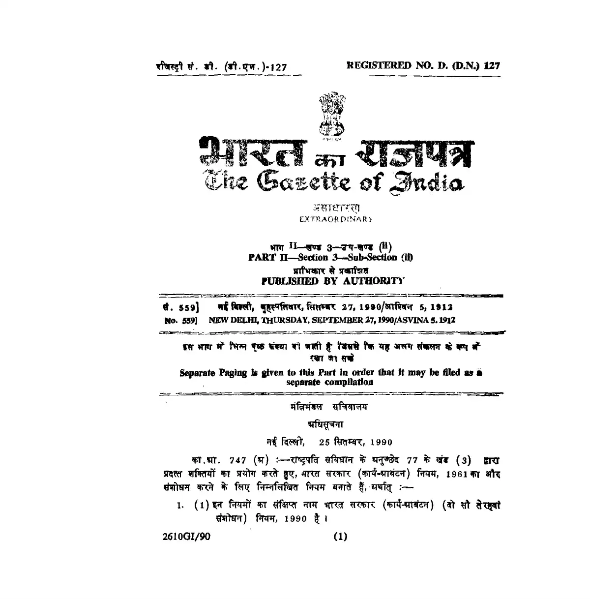
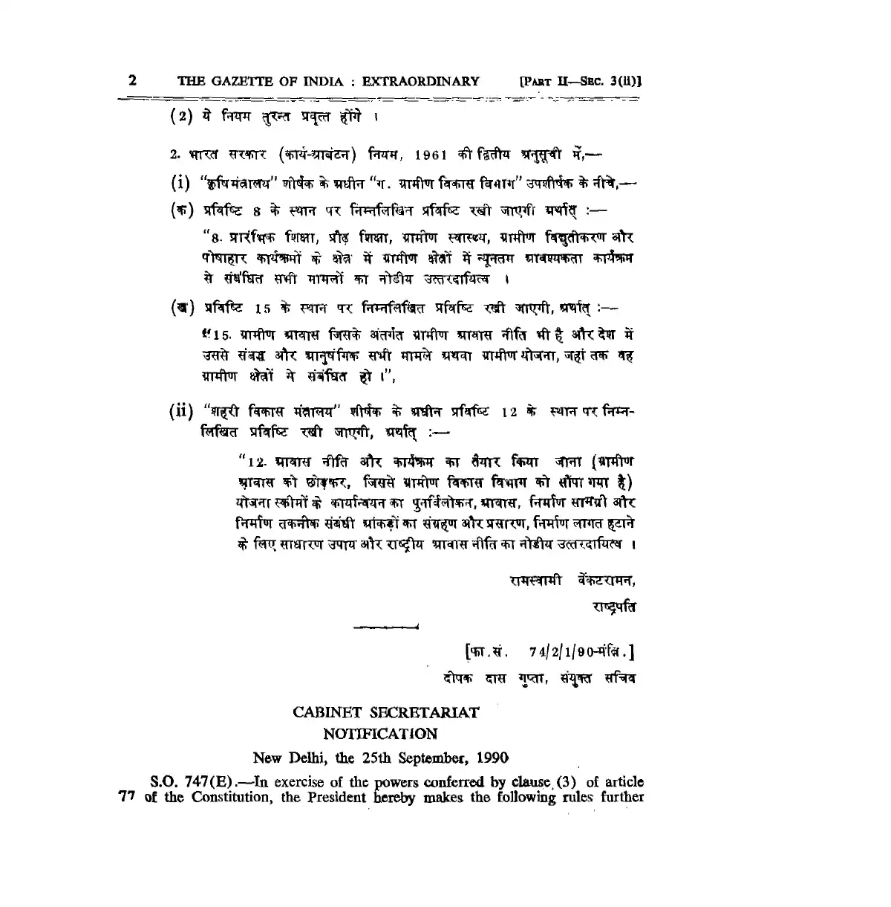
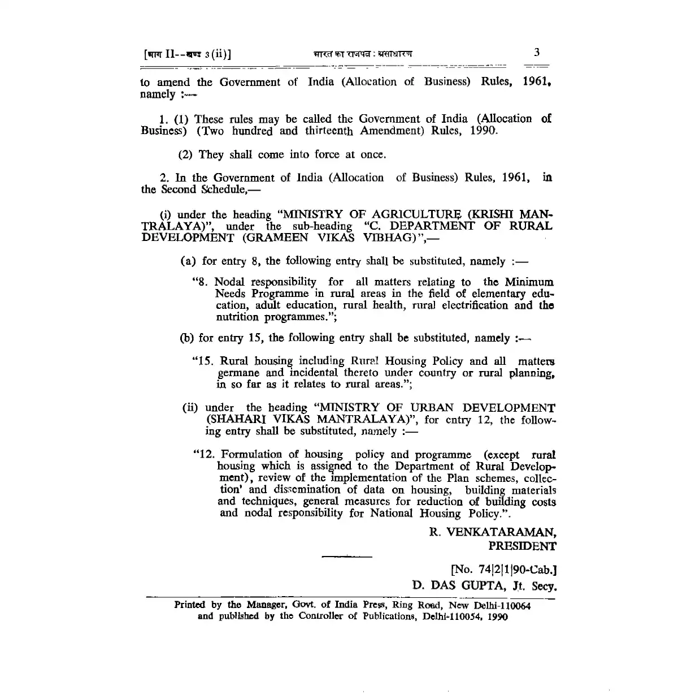

Amendment #213 (S.O. 747(E), 1990)
3 changes: 0 to the First Schedule, 3 to the Second Schedule. 3 applied
The order, page by page
Page 1 of 4

Page 2 of 4

Page 3 of 4

123Schedule 2 › MINISTRY OF AGRICULTURE › DEPARTMENT OF RURAL DEVELOPMENT › entry 8
- 8. Nodal responsibility for all matters relating to the Minimum all matters relating to Needs Programme in rural areas in the field of elementary education, adult education, rural health, rural electrification and the nutrition programmes.
applied at schedule 2 › ministry MINISTRY OF AGRICULTURE › department C › entry 8 in the Rules after #213
Schedule 2 › MINISTRY OF AGRICULTURE › DEPARTMENT OF RURAL DEVELOPMENT › entry 15
- 15. Rural housing including Rural Housing Policy and all matters germane and incidental thereto under country or rural planning in so far as it relates to rural areas.
applied at schedule 2 › ministry MINISTRY OF AGRICULTURE › department C › entry 15 in the Rules after #213
Schedule 2 › MINISTRY OF URBAN DEVELOPMENT › entry 12
- 12. Formulation of housing policy and programme (except rural housing which is assigned to the Department of Rural Development), review of the implementation of the Plan schemes, collection' and dissemination of data on housing, building materials and techniques, general measures for reduction of…
applied at schedule 2 › ministry MINISTRY OF URBAN DEVELOPMENT › entry 12 in the Rules after #213
Page 4 of 4
How this document was read
From the Government of India (Allocation of Business) Rules, 1961 and their amendments, as published by the Cabinet Secretariat (cabsec.gov.in), read by orgpedia. The readings of the older scanned gazettes have known gaps.